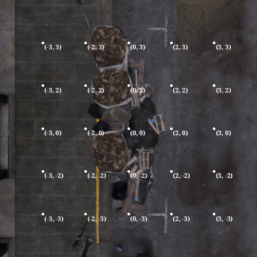

Direct environment usage
Basics
Here is a minimal example on how to use our environment directly, without using our evaluation scripts:
import json
from dotenv import load_dotenv
from rl.environment import CityFlySearchEnv # (or ForestFlySearchEnv)
from scenarios import parse_scenario
from misc import opencv_to_pil
load_dotenv()
env = CityFlySearchEnv()
with open('run_templates/city-template/42_r0/scenario_params.json', 'r') as json_file:
scenario_params = json.load(json_file)
scenario_params = parse_scenario(scenario_params)
with env:
obs, _ = env.reset(options=scenario_params)
image = obs['image']
image = opencv_to_pil(image)
image.show()
Example observation in our environment follows this format:
If found is reported, the observation is an empty dict ({}).
Also, note that if give_class_image=True argument is given to the CityFlySearchEnv, observation dict will contain additional key with an image of the class being searched (this behaviour is used in FS-2 mode):
env = CityFlySearchEnv(give_class_image=True)
with open('run_templates/city-template/42_r0/scenario_params.json', 'r') as json_file:
scenario_params = json.load(json_file)
scenario_params = parse_scenario(scenario_params)
with env:
obs, _ = env.reset(options=scenario_params)
image = obs['class_image']
image = opencv_to_pil(image)
# Will show road construction works class image
image.show()
Furthermore, additional info field follows this format:
Example action follows this format:
Here is another example code where we perform a few actions and use real_position field of the info dict. We perform a few moves and then move to (0, 0, 5) to see our object (the searched object is always at (0, 0, 0), and the coordinate system is centered around it).
import json
import numpy as np
from dotenv import load_dotenv
from rl.environment import CityFlySearchEnv # (or ForestFlySearchEnv)
from scenarios import parse_scenario
from misc import opencv_to_pil
load_dotenv()
env = CityFlySearchEnv()
with open('run_templates/city-template/42_r0/scenario_params.json', 'r') as json_file:
scenario_params = json.load(json_file)
scenario_params = parse_scenario(scenario_params)
real_positions = []
with env:
_, info = env.reset(options=scenario_params)
real_position = info["real_position"]
real_positions.append(real_position)
_, _, _, _, info = env.step(
{
"found": 0,
"coordinate_change": np.array([10, 10, 10])
}
)
real_position = info["real_position"]
real_positions.append(real_position)
_, _, _, _, info = env.step(
{
"found": 0,
"coordinate_change": np.array([-10, -20, 10])
}
)
real_position = info["real_position"]
real_positions.append(real_position)
obs, _, _, _, info = env.step(
{
"found": 0,
"coordinate_change": np.array([1, 7, -75])
}
)
real_position = info["real_position"]
real_positions.append(real_position)
obj_image = obs["image"]
pil_obj_image = opencv_to_pil(obj_image)
print(real_positions[0]) # [-1 3 60]
print(real_positions[1]) # [9 13 70]
print(real_positions[2]) # [-1 -7 80]
print(real_positions[3]) # [0 0 5]
pil_obj_image.show() # Objects are located at [0 0 0]
After executing this code, you should see:

How to obtain scenarios?
As you might've seen in our example, to initialise an environment you need scenario_params. In the minimal working example, we just took it from a template and parsed it using parse_scenario function so that the environment can use it.
That's all great, but you may want to create your new (randomly generated scenarios) instead of having to copy one that's already made. To facilitate this process, there exist ScenarioMappers (in the scenarios directory). Let's see one in action.
(Note: in the following section we will be talking about FS-N-like scenario distributions. See the Appendix B of our our paper for more details.))
FS-1-like scenario distribution
If you'd like to create scenarios with constraints matching those of FS-1, you can use our DefaultCityScenarioMapper like this (there is also analogous DefaultForestScenarioMapper for the Forest environment):
from scenarios import DefaultCityScenarioMapper
from dotenv import load_dotenv
def main():
load_dotenv()
scenario_mapper = DefaultCityScenarioMapper(drone_alt_min=30, drone_alt_max=100)
print(scenario_mapper.create_random_scenario(seed=0))
if __name__ == "__main__":
main()
This will print something like this:
{
'object_coords': (-34125.871, 58220.617, 58.496),
'object_rot': (0.0, 27.109516, 0.0),
'object_type': <ObjectType.WHITE_TRUCK: 15>,
'drone_rel_coords': (35, -7, 95),
'set_object': True,
'regenerate_city': True,
'seed': 0
}
Technical sidenote
Important: The seed parameter is NOT used by the ScenarioMapper. It is however recorded inside the scenario and passed on to the Unreal Engine 5 and to our RNG to sample asset being placed if there are many assets belonging to the same class. Furthermore, you should not pass the same seed twice to the UE5 binary for different scenarios during your experiment. As such, it's a good idea to do something like this:
seeds = random.sample(range(int(1e9)), number_of_runs)
so that you have a premade pool of unique seeds for your random scenarios.
As such, if you would like your experiment to be reproducible, you need to save the scenario to .json and then load it using aforementioned parse_scenario function -- like this:
scenario_mapper = DefaultCityScenarioMapper(drone_alt_min=30, drone_alt_max=100)
scenario = scenario_mapper.create_random_scenario(seed=0)
# Convert all values to str. I know it's probably an antipattern, but some of the things here aren't serializable
# And we have a function that deals with that already
scenario = {k: str(v) for k, v in scenario.items()}
with open("scenario_dumped.json", "w") as f:
json.dump(scenario, f)
with open("scenario_dumped.json", "r") as f:
scenario = json.load(f)
print(scenario) # Everything is str after loading it from json
print(parse_scenario(scenario)) # This properly restores all objects from str representation to their original types
FS-Anomaly-1-like distribution
There exist also DefaultCityAnomalyScenarioMapper and DefaultForestAnomalyScenarioMapper. You can use them in a very similar way:
FS-2-like distribution
For FS-2-like distribution, you can also use DefaultCityScenarioMapper, but you need to modify parameters given to it to reflect parameters in FS-2:
scenario_mapper = DefaultCityScenarioMapper(drone_alt_min=100, drone_alt_max=125, alpha=0.95, random_sun=True)
The alpha parameter basically dictates the maximum horizontal distance between the searched object and drone (as a proportion of drone's height); the higher it is, the harder the task becomes for the drone.
Other distributions
To gain more control over ranges from which we're sampling parameters, you can use CityScenarioMapper and ForestScenarioMapper classes, which offer more configurable parameters.
Oh no, I've got an exception during reset call!
Breathe deeply. As long as this is DroneCannotSeeTargetException, what you're observing is completely normal and is a consequence of the fact that we generate scenarios independently of the UE5.
When you generate a scenario, we randomly calculate drone's offset from the object and then, while calling reset on our environment, we tell UE5 to place the drone in that precalculated spot. Here is where our problem lies, however: we do not know if our drone's spawning position is valid only after we've called the reset method! To get information whether our object is occluded by some building (which is disallowed in FS-1, because the scenario mandates a direct line of sight from drone's starting position to the object being searched) we need to ask the game engine about it. As such, when the game engine determines that the scenario setup violates our assumptions, we get this error indicating that we should resample our scenario.
In FS-2 mode we don't throw if there doesn't exist a direct line of sight from the drone to the searched object, but we throw in 2 cases we deem problematic: - The object is hidden in such a way that finding it would be extremely hard (e.g. hidden under an overpass/bridge); as such, we check if there is a direct line of sight from the object to a point hundreds of meters directly above it (not the drone itself) - If the drone is stuck inside a building. We check that by performing a similar check to the one mentioned above (i.e. checking whether there is a direct line of sight from drone to a point that's directly hundreds of meters above it)
To switch from FS-1 to FS-2 style scenario validation, you need to set require_object_in_sight argument in the CityFlySearchEnv class constructor to False, i.e.
This can be switched back and forth using a setter method:
Important: Note that to replicate our FS-2 setting, you need also to pass the give_class_image=True argument (this is by default False, as is in FS-1 and FS-Anomaly-1):
env = CityFlySearchEnv() # FS-1 setting
env = CityFlySearchEnv(give_class_image=False, require_object_in_sight=True) # (equivalent)
Note that the ForestFlySearchEnv does not have FS-2-related flags as FS-2 is a city-exclusive scenario. We also do not raise DroneCannotSeeTargetExceptions in the Forest environment (at all).
UnrealDiedException
If you are using our environment directly you need to handle the UnrealDiedException during the requests to the environment. You do not need to restart it but this exception is meant to communicate to you that the UE5's internal state during your experiment was lost, and you need to restore it appropriately (probably by calling the reset method and then restarting a trajectory evaluation).
If you are using our testing script, you don't need to worry about that because handling of those situations is implemented by us (inside the TrajectoryEvaluator class).
Minor note: Previous coordinate system
Note that for some of logged runs we provide in all_logs, you may notice that model's movement along the y coordinate does not match with coordinate changes (and is, in fact, flipped). This is not a cause for concern and is merely a divergence between Unreal's coordinate system and our own, where y axis grow in opposite directions. Formerly, we logged coordinates as the "lower-level" coordinate system saw them, but this was fixed in newer version of our environment.
(Note that since object is located at (0, 0, 0) that fact didn't impact model evaluation).